AM適性選手一覧
サカつく2026でAM適性を持つ選手53人を掲載。最大総合力、ポリシー、プレイスタイル、メイン・適性ポジション、入手可否などを比較できます。
AM適性の選手データ
該当選手数
53
メイン＋適性で判定
関連フォメコン
17
条件にAMを含む
最高最大総合力
15,749
該当選手内
最大総合力ランキング TOP10
国籍・プレイスタイル・ポリシー・入手可否で絞り込むと、条件内のTOP10へ自動更新します。
53人表示
1
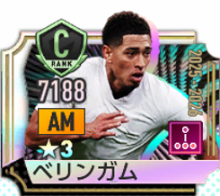
ジュード・ベリンガム
15,749最大総合力
2
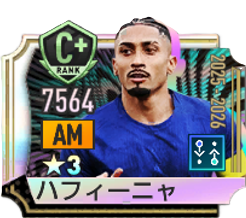
ハフィーニャ
15,700最大総合力
3
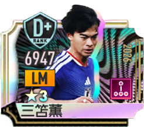
三笘薫〔2026〕
15,692最大総合力
4

トーマス・ミュラー〔2026〕
15,558最大総合力
5

マルコ・ロイス〔2026〕
15,496最大総合力
6

アントワーヌ・グリーズマン
15,484最大総合力
7
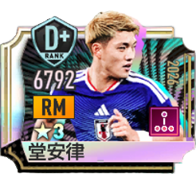
堂安律〔2026〕
15,471最大総合力
8
本田圭佑
15,321最大総合力
9
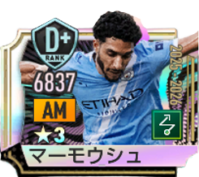
オマル・マーモウシュ
15,317最大総合力
10

ハカン・チャルハノール
15,274最大総合力
11
ロドリゴ・ベンタンクール
15,203最大総合力
12
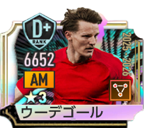
マルティン・ウーデゴール
15,110最大総合力
13
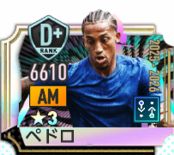
ジョアン・ペドロ
14,973最大総合力
14
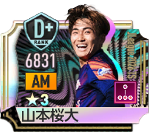
山本桜大(JLeague 2026 TS)
14,927最大総合力
15

南野拓実
14,913最大総合力
16

イスコ
14,887最大総合力
17
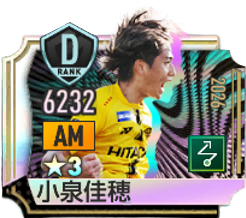
小泉佳穂(2026)
14,676最大総合力
18
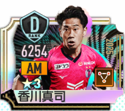
香川真司
14,609最大総合力
19
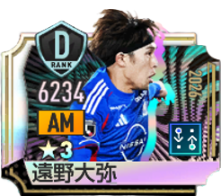
遠野大弥(2026)
14,597最大総合力
20
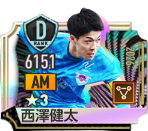
西澤健太(2026)
14,590最大総合力
21
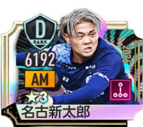
名古新太郎(2026)
14,548最大総合力
22
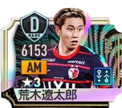
荒木遼太郎(2026)
14,517最大総合力
23
相馬勇紀［J12025BEST11］
14,491最大総合力
24
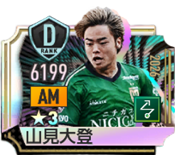
山見大登(2026)
14,481最大総合力
25
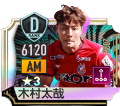
木村太哉(2026)
14,474最大総合力
26
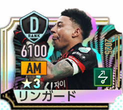
ジェシー・リンガード
14,464最大総合力
27
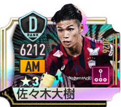
佐々木大樹(2026)
14,437最大総合力
28
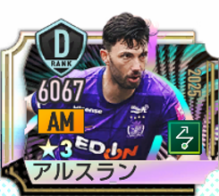
トルガイ・アルスラン
14,430最大総合力
29
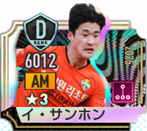
イ・サンホン
14,422最大総合力
30
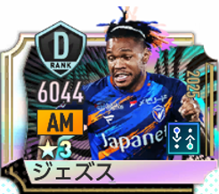
マテウス・ジェズス
14,401最大総合力
31
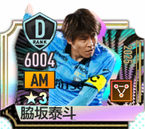
脇坂泰斗
14,399最大総合力
32
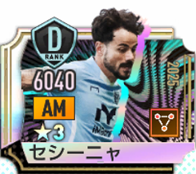
セシーニャ
14,397最大総合力
33
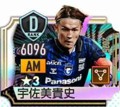
宇佐美貴史
14,390最大総合力
34
小泉佳穂［J12025BEST11］
14,375最大総合力
35
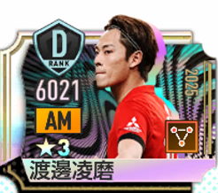
渡邊凌磨
14,358最大総合力
36
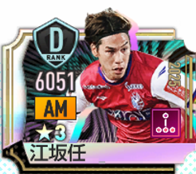
江坂任
14,340最大総合力
37
イ・ドンギョン［K12025BEST11］
14,299最大総合力
38
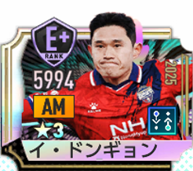
イ・ドンギョン
14,279最大総合力
39

イ・ヒギュン
14,271最大総合力
40
カン・サンユン［K12025BEST11］
14,229最大総合力
41
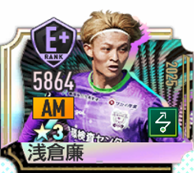
朝倉廉
14,228最大総合力
42
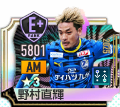
野村直輝
14,180最大総合力
43
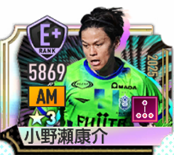
小野瀬康介
14,176最大総合力
44
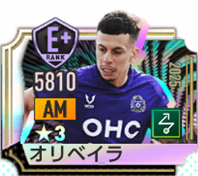
マテウス・オリベイラ
14,160最大総合力
45
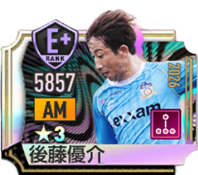
後藤優介(2026)
14,159最大総合力
46
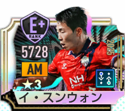
イ・スンウォン
14,122最大総合力
47
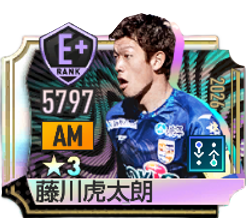
藤川虎太朗(2026)
14,097最大総合力
48
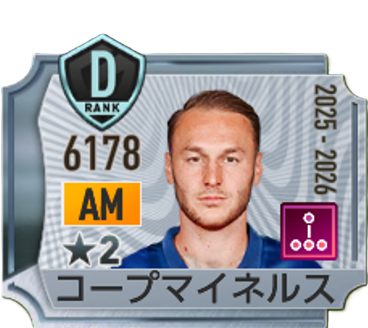
トゥーン・コープマイネルス
12,322最大総合力
49
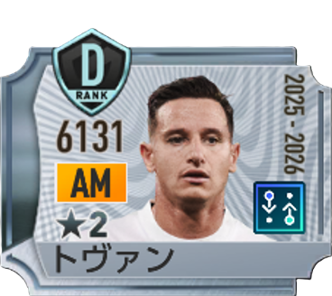
フロリアン・トヴァン
12,295最大総合力
50
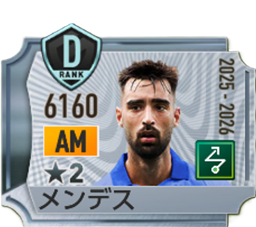
ブライス・メンデス
12,280最大総合力
51
タイタニア・ラインデルス
12,113最大総合力
52
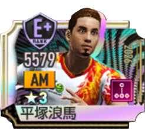
平塚狼馬
11,422最大総合力
53
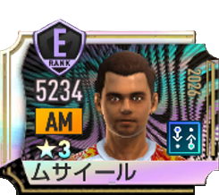
ムサイール
11,009最大総合力
ポリシー別人数

カウンター
15人

リアクション
14人

ポゼッション
12人

ムービング
12人
プレイスタイル別人数

アタッカー
35人

セントラルMF
8人

パサー
7人

ドリブラー
2人

サイドアタッカー
1人
AM適性を持つ全選手
メインポジションだけでなく、適性ポジションにAMを含む選手も対象です。国籍・ポリシー・プレイスタイル・入手可否で絞り込めます。
53人表示
AMを発動条件に含むフォーメーションコンボ
金金ランク
ソベラーノ'94
C025
AM / パサー LvⅡ以上
AM / アタッカー LvⅡ以上
CF / ストライカー LvⅢ以上
AM / アタッカー LvⅡ以上
CF / ストライカー LvⅢ以上
レ・ブルー'98
C027
LB / 守備的FB LvⅡ以上
AM / セントラルMF LvⅡ以上
CF / ストライカー LvⅢ以上
AM / セントラルMF LvⅡ以上
CF / ストライカー LvⅢ以上
エンカルナードス'23
C046
CB / 組立CB LvⅡ以上
DM / セントラルMF LvⅡ以上
AM / アタッカー LvⅢ以上
DM / セントラルMF LvⅡ以上
AM / アタッカー LvⅢ以上
ブラウ・グラーナ'15
C054
CB / 組立CB LvⅡ以上
AM / セントラルMF LvⅡ以上
CF / ストライカー LvⅢ以上
AM / セントラルMF LvⅡ以上
CF / ストライカー LvⅢ以上
アルヴィネグロ・プライアーノ'11
C055
RB / 攻撃的FB LvⅡ以上
AM / パサー LvⅡ以上
CF / ラインブレーカー LvⅢ以上
AM / パサー LvⅡ以上
CF / ラインブレーカー LvⅢ以上
エウスカルドゥナク'12
C056
CB / ストッパー LvⅡ以上
AM / アタッカー LvⅢ以上
CF / ストライカー LvⅡ以上
AM / アタッカー LvⅢ以上
CF / ストライカー LvⅡ以上
銀銀ランク
ラ・ブランキロハ'82
C017
AM / アタッカー LvⅡ以上
AM / パサー LvⅡ以上
AM / パサー LvⅡ以上
ウルチカ'03
C023
LB / 守備的FB LvⅡ以上
AM / アタッカー LvⅡ以上
CF / ポストプレーヤー LvⅡ以上
AM / アタッカー LvⅡ以上
CF / ポストプレーヤー LvⅡ以上
クロチャーティ'99
C024
DM / セントラルMF LvⅡ以上
AM / アタッカー LvⅡ以上
CF / ストライカー LvⅡ以上
AM / アタッカー LvⅡ以上
CF / ストライカー LvⅡ以上
ダニッシュ・ダイナマイト'18
C035
CB / ストッパー LvⅡ以上
AM / パサー LvⅡ以上
CF / ストライカー LvⅡ以上
AM / パサー LvⅡ以上
CF / ストライカー LvⅡ以上
エル・レオン'70
C036
CB / ストッパー LvⅡ以上
AM / アタッカー LvⅡ以上
LW / ドリブラー LvⅡ以上
AM / アタッカー LvⅡ以上
LW / ドリブラー LvⅡ以上
アズーリ’14
C037
GK / オーソドックスGK LvⅡ以上
DM / セントラルMF LvⅡ以上
AM / アタッカー LvⅡ以上
DM / セントラルMF LvⅡ以上
AM / アタッカー LvⅡ以上
ロス・ミリョナリオス'86
C041
CB / ストッパー LvⅡ以上
AM / アタッカー LvⅡ以上
CF / ストライカー LvⅡ以上
AM / アタッカー LvⅡ以上
CF / ストライカー LvⅡ以上
ヴィオラ'99
C042
GK / オーソドックスGK LvⅡ以上
RB / 攻撃的FB LvⅡ以上
AM / パサー LvⅡ以上
RB / 攻撃的FB LvⅡ以上
AM / パサー LvⅡ以上
グリフォーニ'99
C043
RB / 守備的FB LvⅡ以上
AM / アタッカー LvⅡ以上
CF / ポストプレーヤー LvⅡ以上
AM / アタッカー LvⅡ以上
CF / ポストプレーヤー LvⅡ以上
関連ツール
最終データ更新日：